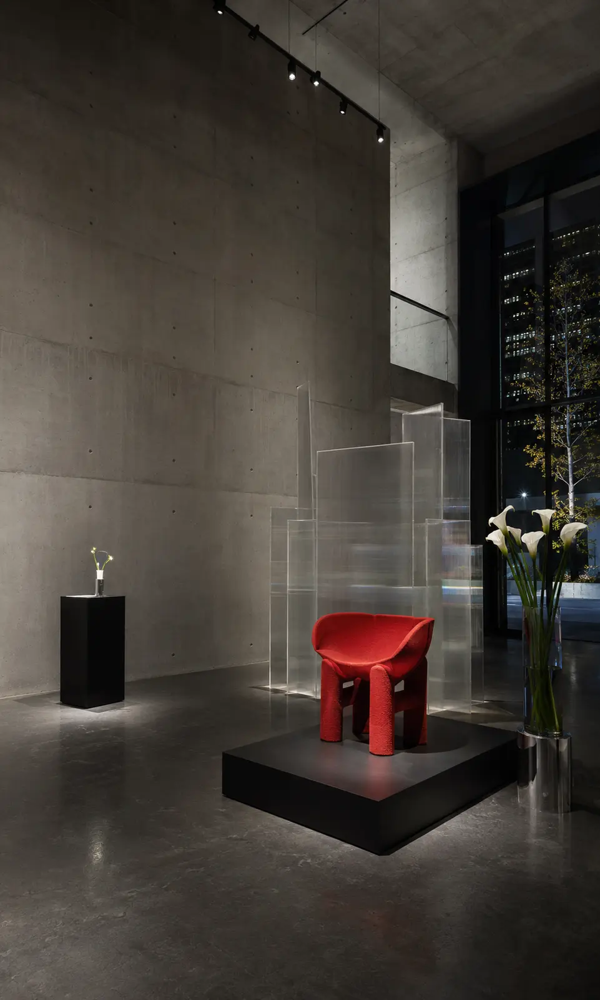
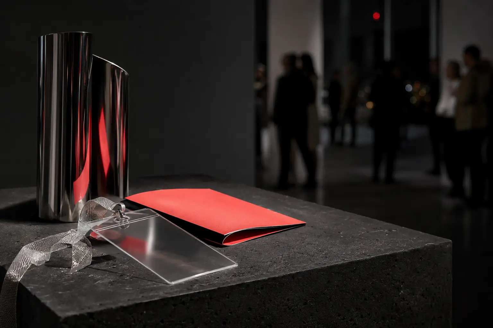
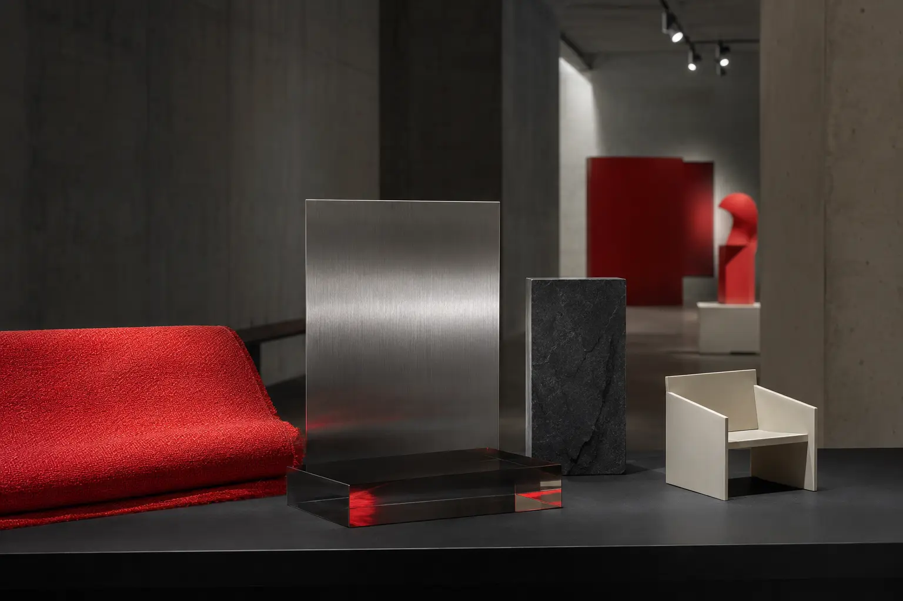
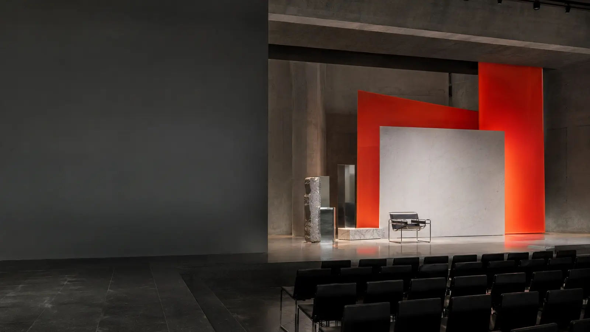
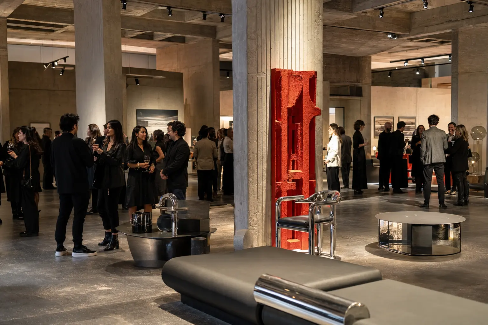

Tres perfiles inspirados en los materiales de la colección.

Atelier N8Ciudad de México · 2026
Lanzamiento privado
Objetos
en movimiento.
La primera colección de Atelier N8 explora el espacio entre materia, función y gesto.AccesoInvitado especial
01 / Manifiesto
Diseñar no es llenar un espacio.
Es cambiar la forma de habitarlo.
Atelier N8 abre por primera vez sus puertas para presentar una colección de objetos nacidos entre arquitectura, oficio y experimentación material. Esta invitación es el inicio del recorrido.

02 / Tu acceso
Una invitación diseñada para ti.
Tu nombre estará asociado a la lista de acceso. Presenta esta experiencia al llegar y nuestro equipo te acompañará al recorrido inicial.
InvitadoInvitado especialAcceso Legacy · N8/2026
03 / Colección 01
Cinco materias.
Una sola tensión.
Textil, acero, piedra, acrílico y luz se encuentran en una serie limitada de objetos para interiores contemporáneos.


Presentación central
Una conversación sobre diseño, materia y permanencia.
20:15 · Sala principal04 / Agenda
Una noche.
Cuatro momentos.
- RecepciónAcreditación y copa de bienvenida
- Presentación N8Dirección creativa y proceso material
- Recorrido privadoColección, prototipos y estudio abierto
- CóctelMúsica, conversación y experiencia gastronómica

Atelier N8
El lanzamiento también es un lugar de encuentro para arquitectura, arte, hospitalidad y diseño.
05 / Galería
Tres miradas
a la Colección 01.
Material, montaje y comunidad: las tres capas que completan la experiencia Atelier N8.
Jueves
Acceso desde las 19:15
Bosque de Chapultepec
07 / Código visual
Monocromático
+ un elemento rojo.
Formal contemporáneo. El código no es obligatorio, pero formará parte de la composición visual de la noche.
08 / Guía de acceso
Todo listo para llegar sin fricciones.
Presenta tu invitación digital. Tu nombre estará en la lista de acceso.
Recomendamos llegar entre 19:15 y 19:40 para vivir el recorrido inicial.
Estacionamiento limitado. La zona cuenta con acceso directo para transporte por aplicación.
La apertura comienza en
00Días00Horas00Minutos00Segundos
09 / Ubicación
Lago/Algo
Av. de los Compositores 4
Bosque de Chapultepec II Sección
El diseño comienza antes de ver el primer objeto.
Nos vemos donde la materia se convierte en experiencia.
Atelier N8 · Colección 0110 / Confirmación Legacy
Reserva
tu acceso.
Confirma antes del 1 de octubre. Tu respuesta quedará registrada y recibirás el resumen por WhatsApp.